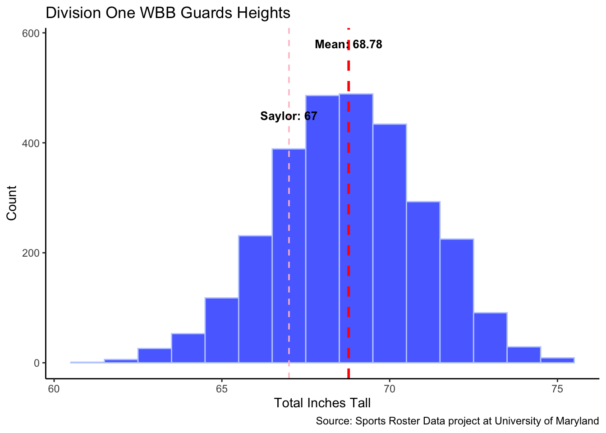

FINAL
Data Visualization Final Project
RESEARCH QUESTION:
Will my sister go D1?
My sister, Saylor, is a freshman in high school, hoping to play basketball in college somewhere, and I thought it would be a fun idea to see her likelihood of doing so. Having prior experience on the women’s basketball team at GWU, I have plenty of realistic, personal experience of what goes on behind the scenes in college recruiting and the type of player that makes it to play Division One in college.
This question is something any athlete wanting to play in college wants to know, and is one of the many uncertainties that surrounds their college decision. For my sister, answering a question like this based strictly on data gives her a small glimpse at her chances of making it to the next level.
DATA SOURCES:
One of the main sources of data I’ll be using is a dataset of almost 14,000 women’s college basketball players for over 900 teams in the NCAA, with information about their hometown, heights, schools, year in school, etc. I found this specific csv file in a Sports-Roster-Data github repository that I was led to from the data is plural archive. All information in it is accurate as of December 21, 2022, and slight changes in the rosters that haven’t yet been documented in the file should not have a significant effect on my research question. The link to the github repository can be found here.
The unit of analysis would be “level of analysis” or “comparison”, since most of the project consists of comparing Saylor’s personal data to the data that exists for players that are already playing in college.
Later in the analysis, I will use data I have gathered myself on the statistics of the wbb players from the official ESPN website.
VARIABLES OF INTEREST:
For this specific question, there are a lot of different variables to look at and analyze.
The main question to answer will be the likelihood of Saylor playing Division One basketball, which will ultimately be represented as a percentage derived from the data - this percentage clearly depends on many different factors.
Height: First, one of the easiest comparisons to make is to compare Saylor’s height to the heights of the players in the dataset. It’s a generally known fact that basketball players (especially in college and professionally) tend to be above average in height, as it plays an important role in the game and recruiting process. However, height is one of many important factors to consider.
Home State: Another variable to consider in this project will be home state. Home state is a less obvious, yet still crucial factor in the likelihood of a player being recruited to play in college. Where a prospect like Saylor lives affects the likelihood they attend high-exposure tournaments in their area, which club team they play for, and where they go to high school. All of which also contribute to the general competitiveness in the area of their home state- the higher the competitiveness, the more likely a coach comes to recruit a player in that area. Saylor and I are from Fort Thomas, Kentucky, so that is the town that will be researched here.
Statistics: The last and possibly most important variable to measure will be Saylor’s statistics, yet this will be the hardest variable to compare directly. Saylor is currently a freshman (grade 9); I use her average points, rebounds, assists, and steals in high school as her data. From there, I will compare these to the statistics of Division One WBB players in college right now. This will give an idea of where Saylor stands by comparing her basketball performance to the level that exists in college.
STATISTICS, MODELING, AND RELATIONSHIPS
ANALYZING HEIGHT VARIABLE:
First, it’s important to see the natural distribution and average of heights of the players already in the dataset:
The average height for the dataset is 70.61 inches, or 5’10”. However, the spectrum of the heights of the players in the dataset ranges from 61 inches, (5’1”) to 81 inches (6’9”).
Now it can be seen where Saylor’s height compares in this data.
Saylor is 5’7, meaning that her “total_inches” value is 67. Here is a graphical representation of how her height compares to those in the dataset:
Saylor is 3 inches below the mean in this dataset, yet her height is still well within the range of the heights in the data.
Now, it’s also important to see how her height lines up with others who play her same position. Usually, the position played is determined primarily by the height of the player. Saylor is a guard, and guards realistically tend to be shorter. To make her chances of getting recruited to play the guard position at the Division One level more accurate, we can look only at the guards’ heights:

Saylor is still below the mean height for Division One guards, but by a smaller margin. It can also be interpreted from this graph that the average height of guards is less than the average height of all the players. This gives a more accurate depiction of where Saylor stands with Division One guards.
Her percentile of this data can then be found.
Based on this variable only, Saylor’s height is at the 47th percentile. Using only this information, we can say she has a 47% chance of playing Division One basketball at the guard position.
ANALYZING HOME-STATE VARIABLE:
It’s also important to see which U.S. states are most popular for recruiting. Excluding international recruits, the frequency of players recruited by state can be seen in the choropleth graph here, with Saylor’s hometown represented by the red star.
The darker states represent a higher number of recruits from that state. Saylor and I are from Kentucky, and while this state isn’t a highly-popular recruiting state, our hometown is right on the border of a couple different states.
An interesting way to better interpret the top recruiting spots in the U.S. is to look at the most popular regions for recruiting. That can be seen in the bar graph below, using the same data to find the most popular states for recruiting.
The most recruited-from region is the South, which includes Kentucky (however, it also includes Texas, which is the most recruited-from state by a fair margin, and can easily be accounting for a large portion of that number). We can consider Saylor’s hometown to actually be located within the Midwes, being that the town is closer to Ohio than it is most of Kentucky, but both the South and Midwest are the most recruited-from regions. The Northeast, as the third most recruited-from region, is still well below the numbers of the South and Midwest.
Either way, Saylor has a reasonable chance of being recruited by a Division One institution, being that she lives within the top most recruited regions of the country.
To get a concrete percentage of her chances using only this variable (in a more realistic way than simply looking at what region she lives in), we can obtain the percentage of players recruited only from the states that border Kentucky and are closest to Saylor’s hometown.
For this analysis, we’ll observe the recruits from Kentucky, Ohio, Indiana, Illinois, and West Virginia, since these borders are the closest to Saylor’s hometown of Fort Thomas.
Using only this variable, we can say Saylor has a 12.33% chance of being recruited as a Division One athlete.
ANALYZING STATS VARIABLE:
The single most important factor in being recruited to play in college is Saylor’s actual basketball performance. While all coaches recruit players for different things and specialties in the way they play, we can get a general sense of where Saylor’s basketball statistics stand against some of the elite college players right now.
Per game, Saylor averages the following statistics:
14 points, 4 rebounds, 4.3 assists, and 2.6 steals.
For the purpose of this analysis, we’ll observe only points and rebounds.
To see Saylor’s stats in comparison to the (arguably) highest-performing guard in Division One women’s basketball right now, we’ll look at the University of Iowa’s Caitlin Clark’s statistics. Clark will serve as the top outlier in this data. Per game, this 2022-2023 season, she averaged the following:
27.8 points, 7.1 rebounds, 8.6 assists, and 1.5 steals.
It’s important to understand that there is a wide range of competition and skill level within the many Division One schools. Each Division One school competes in a conference, and the rankings of these conferences are based on the skill level of the teams in them.
In short, better players usually play in better conferences. Conferences also have their own rankings, so to simplify this analysis, we’ll also compare her stats to the statistics of some of the team-leading guards of “average” teams in each conference. This data I have to wrangle manually from the official ESPN website containing the teams, rosters, and individual statistics of every NCAA program.
In this scatterplot, those who are above, below, and just even with the average can be easily concluded.
There are a few crucial points in this analysis. First, Saylor’s statistics are from competing against high-school competition. The jump in skill level and competition from high school to college is drastic. The other players in this scatterplot are all competing against other Division One athletes. However, we have already concluded that Saylor lives in a highly recruited area, which can be further analyzed to mean that it is a highly competitive area. In short, Saylor is oftentimes competing against other future-Division-One-athletes herself, so it makes sense to compare her current stats directly to the stats of actual Division One women’s basketball players.
We can then find her percentile for this variable.
Saylor’s stats in relation to only this dataset fall in the 29th percentile, so from this variable alone we can conclude she has a 29% chance of competing at a Division One guard level.
REVIEW:
All of the data so far analyzed gives a very basic interpretation of Saylor’s chances to play Division One basketball. There are countless factors that go into the decision to recruit a player to a Division One program, and the variables analyzed in this project are just a few of the very many. It’s also important to remember that these variables are not all of equal importance in the recruiting process, and there is no way to uniformly quantify their importance. Every Division One coach is looking for different things out of their recruits, and what is vital to one coach may be totally insignificant to another.
Based on the few variables and datasets we’ve analyzed throughout this project, we can find the overall percentage chance that Saylor is recruited to play Division One basketball:
In summary, Saylor has a 29% chance of playing Division One basketball.